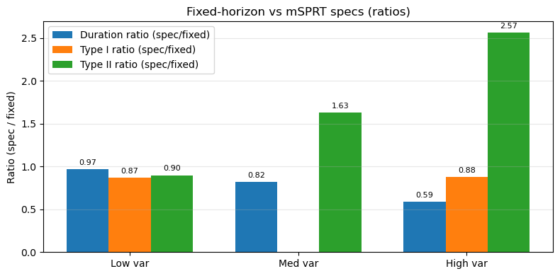
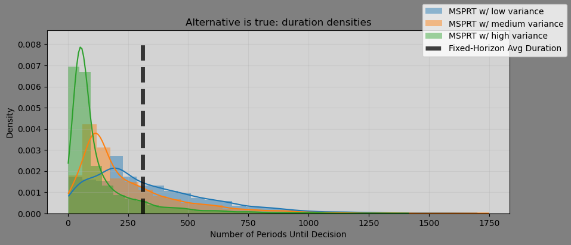

Mixture SPRT: The Cost of Being Uncertain About Your Prior
Written by AI following my writing style, based on the source notebook.
Walking blind into an A/B test is rarely a good idea. Your experiment benefits from your convictions about whether it will work — specifically, what the expected impact is, and how confident you are in it.
In a previous post, I showed that one reason SPRT stops earlier than a fixed-horizon test is that it tests whether the true effect is a single number, rather than the more inclusive “not-zero.” Mixture SPRT (mSPRT) covers that gap by testing whether the true effect comes from a specific distribution instead of a single point.
That sounds like it should be strictly better. It isn’t a silver bullet.
The setup
Monte Carlo with 2,000 simulations, \(\alpha = 0.05\), \(\beta = 0.20\), a true effect of \(\mu = 0.01\) with \(\sigma = 1\), and 200 observations per period. The comparison is between a fixed-horizon test (an oracle, designed for the true effect size) and three mSPRT specifications that differ only in the variance of the prior, all centered on the true effect:
- Low variance — prior variance 0.0007
- Medium variance — 1.5× the baseline
- High variance — 2.5× the baseline
Since all three priors are centered correctly, the only thing varying is how confident the test is about the effect size.
Results
| Test | Avg. duration (\(H_1\)) | Type II error |
|---|---|---|
| Fixed-horizon | 310.0 | 0.202 |
| mSPRT, low variance | 300.8 | 0.181 |
| mSPRT, medium variance | 253.6 | 0.329 |
| mSPRT, high variance | 182.3 | 0.517 |
The pattern is stark and monotonic. As prior variance increases, duration falls and false negatives rise — from a Type II error rate of 18% at low variance to 52% at high variance. At that point the test is missing real effects more often than it detects them, while finishing in roughly 59% of the fixed-horizon time.


Type I error, meanwhile, stays controlled across all specs — around 0.044. So this isn’t a test that’s silently broken; it’s correctly calibrated on the null and paying its cost entirely in power.
Why does this happen?
The wider the prior variance, the harder it is for the test to distinguish whether the data is more consistent with the null or the alternative. It’s genuinely difficult to tell the difference between “the effect could be almost anything” and “the effect is zero.” A diffuse prior over effect sizes puts meaningful mass near zero, so the likelihood ratio between the two hypotheses stays uninformative for longer — and when a boundary is finally crossed, it’s more often the wrong one.
Takeaway
mSPRT does finish before fixed-horizon tests, and it does relax SPRT’s awkward requirement that you name a single exact effect size. But the speed-up scales with how vague your prior is, and so does your false negative rate. The more uncertain you are about the treatment’s effect, the more likely you are to incorrectly conclude it does nothing.
The practical read: mSPRT rewards well-calibrated conviction. If you have a tight, defensible prior, you get modestly faster tests with slightly better power than fixed-horizon. If your prior is a shrug expressed as a distribution, a fixed-horizon test is the safer instrument.